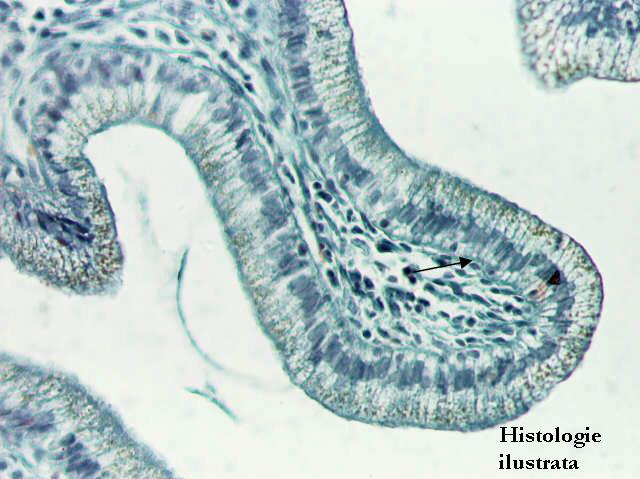
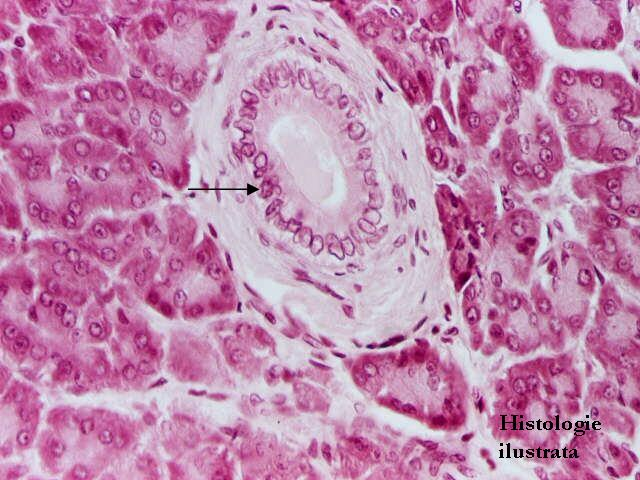
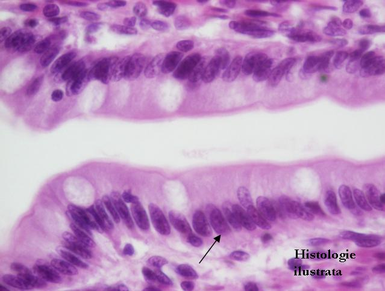
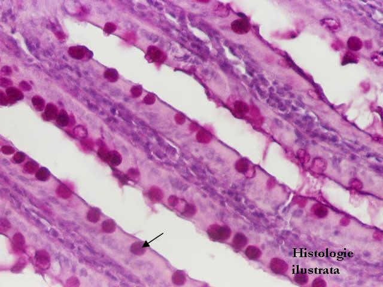

Cap.1 - Ţesutul epitelial
1.1. Epitelii de acoperire (tapetare)
Epitelii simple




Fig. 11 - Epiteliu simplu prismatic înalt – vezicula biliară,
T.S. X 200
Fig. 12 - Epiteliu simplu prismatic înalt – canal extralobular (pancreas), H.E. X 200
Fig. 13 - Epiteliu simplu prismatic înalt – cripte gastrice,
H.E. X 200
Fig. 14 - Epiteliu simplu prismatic înalt – vilozităţi intestinale, H.E. X 200






Fig. 15 - Epiteliu simplu prismatic înalt – enterocite şi celule caliciforme (vilozităţi intestinale), H.E. X 400
Fig. 16 - Epiteliu simplu prismatic înalt – celule caliciforme (vilozităţi intestinale), P.A.S. (+) X 200
Fig. 17 - Epiteliu simplu prismatic înalt – trompa uterină,
T.S. X 200
Fig. 18 - Epiteliu simplu prismatic – epididim, H.E. X 400